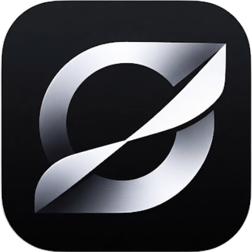
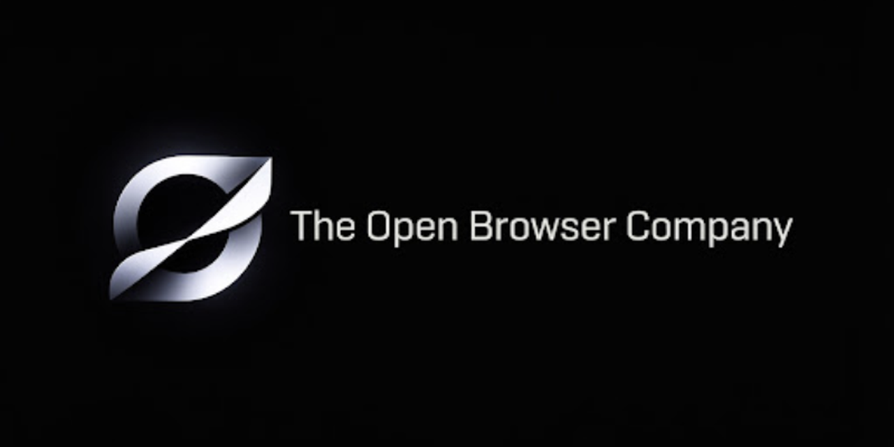

Browsers
A Chromium-based browser for macOS, shaped around a sidebar-first interface and a calmer relationship with the web.
CATOPTRIC →
Independent · Open source · Built for the web
We build a Chromium-based browser shaped around a sidebar-first interface and a calmer relationship with the web — with the code, the issues, and the rough edges all in public.
01 — What we build
A Chromium-based browser for macOS, shaped around a sidebar-first interface and a calmer relationship with the web.
CATOPTRIC →Focused utilities and developer tooling that support the browser and the people building on the open web.
Repositories →Public code, readable documentation, and contributions back to the projects we depend on.
Contribute →
02 — Projects
A free, Chromium-based browser for macOS with a sidebar-first interface. The source is public — the code, the issues, the trade-offs, and the rough edges. We would rather ship a smaller thing in the open than a polished thing behind a wall.
View the repository →03 — The mark
Click the mark to cycle its animations — chrome sheen, orbit, pulse, and tilt.
The browser is too important to be a black box.
We work in public — code, issues, trade-offs, rough edges.
Every repository is an invitation, not a storefront.
Each project carries its own license. Contributions flow upstream.
We are early, and the work is out in the open. There is a place to start.